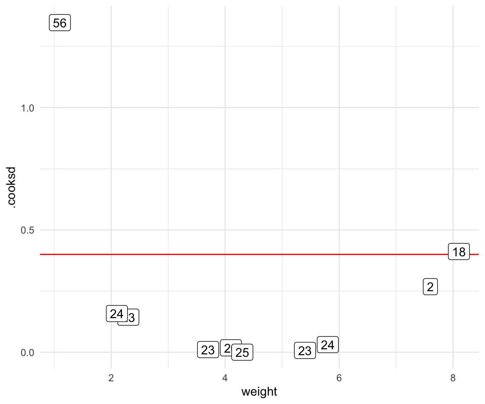

pacman::p_load(tidyverse, magrittr, dlookr, broom, readxl,
see, performance, ggpubr, factoextra, FactoMineR,
conflicted)
conflict_prefer("select", "dplyr")
conflict_prefer("filter", "dplyr")
conflict_prefer("mutate", "dplyr")
conflict_prefer("extract", "magrittr")
conflict_prefer("set_names", "magrittr")
cbbPalette <- c("#000000", "#E69F00", "#56B4E9", "#009E73",
"#F0E442", "#0072B2", "#D55E00", "#CC79A7")37 Ausreißer
Version vom Juni 30, 2023 um 11:25:13
37.1 Theoretischer Hintergrund
Was sind Ausreißer (eng. Outlier) in einem Datensatz? An scih schon eine schwierige Frage. Einige Wissenschaftler behaupten es gebe keine Ausreißer. Die Daten müssetn so ausgewertet werden wie die Daten erhoben wurden. Was es gäbe wären technische Artefakte, diese müssten entdeckt und entfernt werden. Andere Wissenschaftler meinen, dass Ausreißer schon existieren und entferent werden müssen, wenn diese Ausreißer nicht zu der Fragestellung oder den restlichen Daten passen. Es ist eine unbekannte Subpopulation, die sich mit einem oder zwei Vertretern in unsere Daten geschmugelt hat. Diese Subpopulation verzerrt nur das Ergebnis, da wir mit diesen wenigen anderen Beobachtungen sowieso keine Aussage treffen können. Am Ende geht es aber draum Ausreißer zu finden und diese aus den Daten zu entfernen. Wir setzen dann diese Werte der Ausreißer auf NA für fehlender Wert (eng. not available). Oder aber wir erstetzen die Ausreißer durch pasendere Werte aus unseren Daten. Im Prinzip ein wenig wie finde den Ausreißer und imputiere den Ausreißer mit einer anderen Zahl. Mehr zur Imputation von fehlenden Werten findest du in Kapitel 38. Vermeide bitte eine Ausreißer/Imputationsschleife in der du immer wieder Ausreißer findest und diese dann wieder imputierst! Gerade dieses Thema Ausreißer kann sehr gut von biologischen Fachexperten diskutiert werden.
In den folgenden Abschnitten wollen wir uns verschiedene Möglichkeiten der Detektion von Ausreißern annähern. Es geht wie immer von algorithmisch einfach zu komplexer.

Bitte beiße dich nicht an der statistischen Auslegung eines Ausreißers fest. Du bist der Herr oder die Frau über deine Daten. Kein Algorithmus weis mehr als du. Das macht statistischen Engel natürlich traurig…
Bitte beachte, dass wenn du weist, dass ein Wert nicht richtig ist, diesen dann auch entfernt. Wenn du während der Beprobung feststellst, dass du leider auf dem Feld zu wenig Erde mitgenommen hast, dann trage ein NA in die Tabelle ein. Unsinnige Werte einzutragen nur weil die ja so entstanden sind, macht keinen Sinn. Auch kann es sein, dass du dich mal vertippst. Das heist, du hast in die Exceltabelle eine 0 oder ein Komma falsch gesetzt. Das findest du jetzt in der explorativen Datenanalyse raus. Dann bitte korrigiere diese Werte und mache bitte nicht hier mit der Detektion von Ausreißern weiter. Wenn du selber weist, warum da so ein komischer Wert in der Tabelle steht, dann korrigiere den Wert und schreibe in deinen Bericht, was du getan hast.
Sensitivitätsanalysen nach der Entfernung von Ausreißer
Nachdem wir Beobachtungen aus unseren Daten entfernt haben, ist es üblich noch eine Sensitivitätsanalysen durchzuführen. Wir Vergleich dann das gereinigte Modell mit anderen Modellen. Oder wir wollen die Frage beantworten, was hat eigentlich mein Entfernen von Ausreßern am Ergebnis geändert? Habe ich eine wichtige Beobachtung rausgeschmissen? Das machen wir dann gesammelt in dem Kapitel 39 zu den Sensitivitätsanalysen.
37.2 Genutzte R Pakete
Wir wollen folgende R Pakete in diesem Kapitel nutzen.
Am Ende des Kapitels findest du nochmal den gesamten R Code in einem Rutsch zum selber durchführen oder aber kopieren.
37.3 Daten
Um die Detektion von Ausreißern besser zu verstehen, schauen wir uns zwei Beispieldaten an. Zum einen den Datensatz zu den langnasigen Hechten. Der Datensatz der langnasigen Hechte ist ein echter Datensatz, so dass wir hier eventuell Ausreißer finden werden.
longnose_tbl <- read_csv2("data/longnose.csv") In der Tabelle 37.1 ist der Datensatz longnose_tbl nochmal für die ersten sieben Zeilen dargestellt. Wir haben hier keine fehlenden Werte vorliegen.
| stream | longnose | area | do2 | maxdepth | no3 | so4 | temp |
|---|---|---|---|---|---|---|---|
| basin_run | 13 | 2528 | 9.6 | 80 | 2.28 | 16.75 | 15.3 |
| bear_br | 12 | 3333 | 8.5 | 83 | 5.34 | 7.74 | 19.4 |
| bear_cr | 54 | 19611 | 8.3 | 96 | 0.99 | 10.92 | 19.5 |
| beaver_dam_cr | 19 | 3570 | 9.2 | 56 | 5.44 | 16.53 | 17.0 |
| beaver_run | 37 | 1722 | 8.1 | 43 | 5.66 | 5.91 | 19.3 |
| bennett_cr | 2 | 583 | 9.2 | 51 | 2.26 | 8.81 | 12.9 |
| big_br | 72 | 4790 | 9.4 | 91 | 4.10 | 5.65 | 16.7 |
Im Weiteren betrachten wir noch das Beispiel der Gummibärchendaten. Auch hier haben wir echte Daten vorliegen, so dass wir eventuell Ausreißer entdecken könnten. Da wir hier fehlende Werte in den Daten haben, entfernen wir alle fehlenden Werte mit der Funktion na.omit(). Damit löschen wir jede Zeile in den Daten, wo mindestens ein fehlender Wert auftritt. Da wir hier mittlerweile sehr viele Daten vorliegen haben, wollen wir das Problem auf die beiden Quellen FU Berlin und dem Girls and Boys Day eingrenzen.
In der Tabelle 37.2 ist der Datensatz gummi_tbl nochmal für die ersten sieben Zeilen dargestellt. Nun haben wir hier in dem Datensatz zu den Gummibärchen auch keine fehlenden Werte mehr.
| gender | age | height | semester | most_liked |
|---|---|---|---|---|
| m | 35 | 193 | 10 | lightred |
| w | 21 | 159 | 6 | yellow |
| w | 21 | 159 | 6 | white |
| w | 36 | 180 | 10 | white |
| m | 22 | 180 | 3 | white |
| m | 22 | 180 | 3 | green |
| w | 21 | 163 | 3 | green |
Nun wollen wir uns aber erstmal den simpelsten Fall von Ausreißern und die Problematik dahinter visualisieren.
37.4 Ausreißer mit Cook`s Abstand
Mit der Cook’schen Distanz können wir herausfinden, ob eine einzelne Beobachtung ein Ausreißer im Zusammenhang zu den anderen Beobachtungen ist. Die Cook’sche Distanz misst, wie stark sich alle geschätzten Werte im Modell ändern, wenn der \(i\)-te Datenpunkt gelöscht wird. Veranschaulichen wir uns einmal den Zusammenhang an zwei Beispieldaten.
Das R Paket olsrr erlaubt eine weitreichende Diagnostik auf Ausreißer für einem normalverteilten Outcome \(y\).
Tabelle 37.3— Zwei Datentabellen zum Vergleich der Detektion von Ausreißern nach Cook’s Abstand.
| weight | jump_length |
|---|---|
| 1.2 | 22 |
| 2.1 | 23 |
| 2.5 | 24 |
| 3.1 | 23 |
| 4.6 | 19 |
| 5.1 | 34 |
| 7.9 | 35 |
| 3.1 | 36 |
| 4.3 | 23 |
| 5.5 | 22 |
| weight | jump_length |
|---|---|
| 1.1 | 190 |
| 2.3 | 23 |
| 2.1 | 24 |
| 3.7 | 23 |
| 4.1 | 19 |
| 5.4 | 24 |
| 7.6 | 25 |
| 4.3 | 26 |
| 5.8 | 28 |
| 8.1 | 180 |
Wir können uns die Daten der Tabelle 37.3 auch als Visualisierung in Abbildung 37.1 anschauen. Wir sehen die starken Ausreißer in der Visualisierung. Das ist auch so gewollt, wir haben die Ausreißer extra sehr extrem gewählt.


Im Folgenden rechnen wir eine simple Gaussian lineare Regression auf den Daten und schauen einmal, was wir dann über die einzelnen Beobachtungen erfahren und ob wir die eingestellten Ausreißer wiederfinden.
fit_cook <- lm(jump_length ~ weight, data = out_tbl)Wir können die Funktion augment() nutzen um die Cook’sche Distanz als .cooksd aus dem linearen Modellfit zu berechnen. Wir lassen uns noch die Variable weight wiedergeben um uns später dann die Visualisierung zu erleichtern.
cook_tbl <- fit_cook %>%
augment %>%
select(weight, .cooksd)
cook_tbl# A tibble: 10 x 2
weight .cooksd
<dbl> <dbl>
1 1.1 1.33
2 2.3 0.0300
3 2.1 0.0321
4 3.7 0.0147
5 4.1 0.0168
6 5.4 0.0158
7 7.6 0.0665
8 4.3 0.0108
9 5.8 0.0150
10 8.1 1.39 Zuerst sehen wir, dass die \(1\)-ste und die \(10\)-te Beobachtung sehr hohe Werte der Cook’schen Distanz haben. Das heist hier ist irgendwas nicht in Ordnung. Das haben wir ja auch so erwartet. Die beiden Beobachtungen sind ja auch unsere erschaffene Ausreißer. Nun brauchen wir noch einen Threshold um zu entscheiden ab wann wir eine Beobachtung als Ausreißer definieren. Es hat sich als “Kulturkonstante” der Wert von \(4/n\) als Threshold etabliert. Berechnen wir also einmal den Threshold für unseren Datensatz indem wir \(4\) durch \(n = 10\) teilen.
cooks_border <- 4/nrow(cook_tbl)
cooks_border[1] 0.4Wir erhalten einen Threshold von \(0.4\) gespeichert in cooks_border. In Abbildung 37.2 haben wir den Threshold einmal eingezeichnet. Auf der x-Achse ist das weight, damit sich die Punkte etwas verteilen. Wir könnten auch den Index auf die x-Achse legen.
ggplot(cook_tbl, aes(weight, .cooksd)) +
geom_point() +
geom_hline(yintercept = cooks_border, color = "red") +
theme_bw()
Wir können jetzt mit der Funktion which() bestimmen welche Beobachtungen wir als Ausreißer identifizert haben. Was wir jetzt mit den Ausreißern machen, müssen wir uns überlegen. Im Prinzip haben wir zwei Möglichkeiten. Entweder entfernen wir die Beobachtungen aus unserem Datensatz oder aber wir setzen die Werte der Ausreißer auf NA oder eine andere pasendere Zahl.
remove_weight_id <- which(cook_tbl$.cooksd > cooks_border)Weil es hier am Anfang noch relativ einfach sein soll, entfernen wir einfach die beiden Ausreißer aus unseren Daten. Wir erhalten dann einen kleineren Datensatz mit \(n = 8\) Beobachtungen.
out_tbl <- out_tbl[-remove_weight_id,]
out_tbl# A tibble: 8 x 2
weight jump_length
<dbl> <dbl>
1 2.3 23
2 2.1 24
3 3.7 23
4 4.1 19
5 5.4 24
6 7.6 25
7 4.3 26
8 5.8 28Du siehst, dieser Zugang an die Detektion von Ausreißern ist sehr simple. Wir schauen einfach auf die Cook’sche Distanz und haben so einen schnellen Überblick. Ich empfehle auch gerne dieses Vorgehen um einmal einen Überblick über die Daten zu erhalten. Leider leifern nicht alle Modelle eine Cook’sche Distanz, daher müssen wir uns jetzt etwas strecken und noch andere Verfahren einmal ausprobieren.
37.5 Ausreißer mit performance
Nun wollen wir uns den echten Daten zuwenden und dort einmal schauen, ob wir Ausreißer finden können. Wir nutzen hierzu einmal die Funktion check_outliers() aus dem R Paket performance. Die Funktion check_outliers() rechnet nicht eine staistische Maßzahl für die Bestimmung eines Ausreißers sondern eine ganze Reihe an Maßzahlen und gewichtet diese Maßzahlen. Am Ende trifft die Funktion check_outliers() dann eine Entscheidung welche Beobachtungen Aureißer sind. Dabei werden alle Variablen betrachtet. Es gibt keinen Unterschied zwischen \(y\) oder \(x\). Wir nutzen den ganzen Datensatz.
Das R Paket performance hat die Möglichkeit zur Outliers detection (check for influential observations).
check_outliers(longnose_tbl)2 outliers detected: cases 18, 43.
- Based on the following method and threshold: mahalanobis (24.322).
- For variables: longnose, area, do2, maxdepth, no3, so4, temp.Wir finden also sieben Aureißer in unseren Daten. Wir können diese Beobachtungen einmal mit der Funktion extract() rausziehen und uns anschauen. Wie immer mit so Datensätzen erkennen wir hier noch nicht so ein richtiges Muster. Da müssen wir dann nochmal andere Funktionen nutzen.
longnose_tbl %>%
extract(c(8, 17, 18, 21, 28, 43, 44), )# A tibble: 7 x 8
stream longnose area do2 maxdepth no3 so4 temp
<chr> <dbl> <dbl> <dbl> <dbl> <dbl> <dbl> <dbl>
1 big_elk_cr 164 35971 10.2 81 3.2 17.5 13.8
2 conowingo_cr 112 27350 8.5 65 6.95 14.9 24.1
3 dead_run 25 4145 8.7 51 0.34 44.9 23
4 dorsey_run 8 7814 6.8 160 0.44 20.2 22.6
5 haines_br 98 1967 8.6 50 7.71 26.4 16.8
6 mainstem_patuxent_r 239 8636 8.4 150 3.31 5.95 18.1
7 meadow_br 234 4803 8.5 93 5.01 11.0 24.3Ebenso schauen wir einmal bei dem Gummibärchendaten nach, welche der Beobachtungen ein Ausreißer sein könnten.
check_outliers(gummi_tbl)4 outliers detected: cases 95, 119, 122, 179.
- Based on the following method and threshold: mahalanobis (20).
- For variables: age, height, semester.Wir wissen ja, dass wir recht viele Beobachtungen haben und wie wir sehen, scheint sich so ein Cluster in den hohen Zweihundertsiebzigern gebildet zu haben. Manchmal echt spanned, was man so finden kann.
gummi_tbl %>%
extract(c(95, 119, 122, 179), )# A tibble: 4 x 5
gender age height semester most_liked
<fct> <dbl> <dbl> <dbl> <fct>
1 w 27 168 15 white
2 w 54 163 1 darkred
3 w 53 167 1 darkred
4 m 26 176 15 none Am Ende muss man dann bei der Funktion check_outliers() daran glauben, dass es sich um Ausreißer handelt. Wir müssen uns dann die Daten genau anschauen und entscheiden, ob wir wirklich so viele Beobachtungen entfernen wollen. Darüber hinaus wisen wir jetzt gar nicht, warum wir eine Beobachtung als Ausreißer definiert haben. Dafür müsstest du dann tiefer in die Funktion mit der Hilfeseite ?check_outliers() einsteigen.
37.6 Ausreißer mit dlookr
Eine weitere Möglichkeit Ausreißer zu finden bietet das R Paket dlookr mit der Funktion diagnose_outlier(). Neben dieser Funkion hat das R Paket dlookr noch eine Vielzahl an weiteren Funktionen, die im Bereich der explorativen Datenanalyse von nutzen sein mögen. Schau dir einfach einmal das R Paket und die Webseite näher an.
Das R Paket dlookr hat eine große Auswahl an simplen Algorithmen für die Anpassung von Ausreißern.
Wir wollen hier jetzt nur die Funktion diagnose_outlier() und plot_outlier() nutzen. Also wir werden zuerst die Ausreißer finden und dann die Ausreißer einmal visualisieren. Im Gegensatz zu dem R Paket performance nutzt das R Paket dlookr nicht eine große Auswahl an Algorithmen und pooled die Ergebnisse. Wir schauen einmal was wir so finden und was die Vorteile und Nachteile sind.
diagnose_outlier(longnose_tbl) %>%
filter(outliers_cnt > 0) %>%
arrange(desc(outliers_cnt))# A tibble: 6 x 6
variables outliers_cnt outliers_ratio outliers_mean with_mean without_mean
<chr> <int> <dbl> <dbl> <dbl> <dbl>
1 longnose 7 10.3 150. 38.8 26
2 area 5 7.35 28204. 7565. 5927.
3 so4 3 4.41 32.0 11.7 10.7
4 do2 2 2.94 9.15 8.76 8.75
5 maxdepth 2 2.94 155 72.6 70.1
6 no3 1 1.47 7.71 2.67 2.60Nachdem wir wieder den ganzen Datensatz unser langnasigen Hechte in dei Funktion diagnose_outlier() gesteckt haben, kriegen wir einen Datensatz wieder in dem jede Variable mit ihrer anzahl an Ausreißern outliers_cnt angezeigt wird. Wir haben also \(7\) Ausreißer in dem Outcome longnose sowie in anderen Variablen für \(x\). Schauen wir uns einmal die Ausreißer und deren Effekt in der Abbildung 37.3 an.
longnose_tbl %>% plot_outlier(longnose)
longnose_tbl %>% plot_outlier(area)
longnose.
area.longnose und area mit und ohne Ausreißer.In Abbildung 37.3 (a) sehen wir den Boxplot und das Histogramm der des Outcomes longnose einmal mit den Ausreißern und einmal ohne die Ausreißer. Wie du sehen kannst ändert sih die Verteilung des Outcomes dramatisch, wenn wir die Ausreißer entfernen. Deshalb müssen wir besonders bei einem Outcome gut überlegen, ob es eine gute Idee ist, die Ausreißer zu entfernen. Auch in Abbildung 37.3 (b) sehen wir für die Variable area die Boxplots und das Histogramm einmal mit den Ausreißern und einmal ohne die Ausreißer. Auch hier sehen wir eine Veränderung in der Verteilung, wenn wir die Ausreißer entfernen. Du siehst, Ausreißer sind immer Teil der Daten und ändern deren Verteilung.
Wir machen jetzt einfach weiter und stören uns nicht an möglichen biologischen Implikationen. Wir wollen jetzt die Ausreißer nicht nur entfernen, sondern durch neue Datenpunkte ersetzen. Faktisch imputieren wir die Ausreißer. Wenn unsere zu imputierende Variable kontinuierlich ist, dann können wir folgende Verfahren nutzen um die Ausreißer in der Variablen zu ersetzen.
- mean: Wir ersetzen die gefundenen Ausreißer mit dem Mittelwert der Variable.
- median : Wir ersetzen die gefundenen Ausreißer mit dem Median der Variable.
- mode : Wir ersetzen die gefundenen Ausreißer mit dem Modus der Variable. Also dem am meisten vorkommenden Wert in der Variable.
- capping : Wir imputieren die “oberen” Ausreißer mit dem 95% Quantile und die “unteren” Ausreißer mit dem 5% Quantile. Wir schneiden sozusagen die Verteilungsenden ab.
Im folgenden nutzen wir einmal das capping oder die Quantileimputation sowie die median Imputation. Schauen wir mal was dann pasiert.
longnose_imp_tbl <- longnose_tbl %>%
mutate(longnose_capping = imputate_outlier(., longnose, method = "capping"),
longnose_median = imputate_outlier(., longnose, method = "median"))In Abbildung 37.4 sehen wir die beiden Imputationsmethoden capping und median für die Ausreißer in den Daten einmal dargestellt. Wir sehen das in der Abbildung 37.4 (a) durch die Quantilimputation die Ausreißer alle nach links geschoben werden. Es entsteht ein neues lokales Maximum. Ob das so sinnvoll ist, sei mal dahingestellt. Der Vorteil ist, dass sich dadurch die anderen Teile der Verteilung nicht ändern. Wenn wir die Medianimputation durchführen, dann erhöhen wir das Maximum der ursprünglichen Verteilung noch weiter. Dafür verlieren wir dann eben alle Werte über Einhundert. Hier müssen wir vermutlich wirklich mal an die Sensitivitätsanalyse ran.
pluck(longnose_imp_tbl, "longnose_capping") %>%
plot
pluck(longnose_imp_tbl, "longnose_median") %>%
plot

Wie du siehst ist eine Detektion von Ausreißern nicht so einfach. Zum einen brauchen wir dazu Daten, damit wir auch Ausrißer finden können. Zu irgendwas müssen wir ja die einzelnen Beobachtungen vergleichen. Zum anderen können wir durch die Imputation die Verteilung der Daten stark ändern. Es bleibt ein Drahtseilakt.
37.7 Hauptkomponentenanalyse
Wir kürzen die Hauptkomponentenanalyse mit PCA ab.
Die Hauptkomponentenanalyse (eng. Principle Component Analysis, abk. PCA) als Abschnitt im Ausreißerkapitel ist der Hauptkomponentenanalyse nicht würdig. Wir könnten hier ein eigenes Kapitel nur über die PCA, wie ich die Hauptkomponentenanalyse ab jetzt immer abkürzen werde, schreiben und das würde nicht reichen. Das hat vor allem damit zu tun, dass die PCA in den Sozialwissenschaften sehr weitreichend genutzt wird. Ebenso ist die Auswertung von Fragebögen allgemein ein Schwerpunkt der PCA. Wir nutzen die PCA hier jetzt um zu sehen, ob wir Ausreißer in unseren Beobachtungen haben. Das ist also eine sehr spezifische Anwendung. Vielleicht wird dieses Kapitel nochmal größer, aber jetzt bleiben wir einmal bei der Anwendung.
Was ist grob die Idee der PCA? Wir wollen unseren Daten, also die ganze Datenmatrix einmal so transformieren, dass wir neue Komponenten aus den Daten extrahieren, die die Daten auf einer anderen Dimension beschreiben. Klingt etwas kryptisch, aber im Prinzip handelt es sich bei der PCA um eine Transformation der Daten. Wir nutzen dabei die Varianzstruktur und die Varianz/Covarianzmatrix. Im Prinzip also die Korrelation zwischen den einzelnen Variablen in dem Datensatz.
Neben der PCA existiert noch das Multidimensional Scaling (abk. MDS). Das MDS ist im Prinzip eine Spezialform der PCA. Im Unterschied zur PCA wird die MDS auf einer Distanzmatrix gerechnet. In einer MDS können wir nicht einfach so unsere Daten reinstecken sondern müssen zuerst die Daten in eine Distanzmatrix umrechnen. Dafür gibt es die Funktion dist() oder as.dist(), wenn wir schon Distanzen vorliegen haben. Daher ist die Anwendung einer MDS nicht besonders komplizierter.
Wie immer gibt es eine Vielzahl an tollen Tutorien, die die PCA gut erklären. Ich habe hier einmal eine Auswahl zusammengestellt und du kannst dich da ja mal vertiefend mit beschäftigen, wenn du willst. Teile der Tutorien findest du vermutlich hier im Haupttext wieder.
Es gibt eine natürlich große Anzahl an Quellen wie du in R eine PCA oder ein MDS durchführst. In der folgenden Box findest du eine Sammlung an Tutorien und R Code, der dir als Inspiration dienen mag. Ich werde teile von den Tutorien in der Folge verwenden, kann aber natürlich nichts alles nochmal machen.
Weitere R Quellen für die Principal Component Analysis
37.7.1 Principal Component Analysis (PCA)
Wenn wir eine PCA in R rechnen wollen, dann haben wir zuerst die Wahl zwischen den Funktionen prcomp() und princomp(). Laut der R-Hilfe hat die Funktion prcomp() eine etwas bessere numerische Genauigkeit. Daher ist die Funktion prcomp() gegenüber princomp() vorzuziehen. Daher nutzen wir jetzt auch die Funktion prcomp(). Es gibt aber noch eine neuere Implementierung der Funktionalität in dem R Paket FactoMineR und der Funktion PCA(). Langer Satz kurzes Fazit, wir nutzen die Funktion PCA() im folgenden Abschnitt.
Wir müssen uns jetzt leider etwas von dem tibble verabschieden. Für die PCA brauchen wir einen Datensatz, in dem nur Zahlen oder Faktoren stehen. Daher schieben wir die Namen der Beobachtungen oder die ID in die Zeilennamen. Eigentlich keine gute Idee für die Arbeit mit Daten, aber für die PCA passt es. Wir haben dann also den data.frame() als longnose_pca_df vorliegen. Mit diesem Datensatzobjekt können wir dann in die PCA starten.
longnose_pca_df <- longnose_tbl %>%
select(-stream) %>%
as.data.frame() %>%
set_rownames(longnose_tbl$stream)Wenn wir die Daten von jeglichen character Spalten gereinigt haben, dann können wir die Funktion PCA() nutzen. Wir wollen uns die Visualisierung gleich selber nochmal nachbauen, deshalb hier die Option mit graph = FALSE. Im folgenden schauen wir uns nur eine Auswahl an möglichen Abbildungen an. Davon natürlich die wichtigsten Abbildungen, aber das Factoextra R Package: Easy Multivariate Data Analyses and Elegant Visualization kann natürlich noch viel mehr.
pca_res <- PCA(longnose_pca_df, graph = FALSE)Nachdem wir die PCA durchgeführt haben, schauen wir uns einmal an, ob es überhaupt irgendwas gebracht hat, dass wir die PCA durchgeführt haben. Wir haben ja unsere Daten transformiert und erhalten pro Variable eine neue Dimension wieder. In einem Scree Plot wie in Abbildung 37.5 wird die erklärte Varianz pro Hauptkomponente gezeigt.
fviz_screeplot(pca_res, addlabels = TRUE, ylim = c(0, 50))
Wir erkennen, dass unsere Hauptkomponenten teilweise viel Varianz erklären, aber wir keine Hauptkomponente gefunden haben, die sehr viel Varianz erklärt. Es gibt also in unseren erhobenen Daten keine Variable, die “alles” erklärt. Mit “alles” ist dann natürlich die Varianz gemeint. In Abbildung 37.6 (a) sehen wir das Diagramm der Variablen, also der Spalten in der Datenmatrix. Positiv korrelierte Variablen zeigen auf dieselbe Seite des Diagramms. Negativ korrelierte Variablen zeigen auf die gegenüberliegenden Seiten des Diagramms. In Abbildung 37.6 (b) ist das Diagramm der Beobachtungen, also den Zeilen in der Datenmatrix, dargestellt. Beobachtungen mit einem ähnlichen Muster über die Zeilen werden in Gruppen zusammengefasst. In der Abbildung 37.6 (c) sehen wir nochmal die beiden Abbilungen zusammen und übereinander.
fviz_pca_var(pca_res, col.var = "black")
fviz_pca_ind(pca_res,
col.ind = "cos2",
gradient.cols = c("#00AFBB", "#E7B800", "#FC4E07"),
repel = TRUE)
fviz_pca_biplot(pca_res)


Gut, und was sollte das ganze jetzt? Wenn wir uns die Abbildungen ansehen, dann erkennen wir zuerst, dass es zwar Variablen gibt, die sich sehr ähnlich sind. Die Variable area und maxdepth sind stark miteinander korreliert. Die Pfeile zeigen beide in die gleiche Richtung. Ebenso scheint es einen negativen Zusammenhang zwischen so4 und do2 zu geben. Die Richtung ist egal, wir können die Dimensionen nicht direkt interpretieren, aber die Zusammenhänge zwischen den Variablen. Abschließend sehen wir, dass wir eine zu erwartende Aufteilung der Variablen haben. Immerhin messen wir Werte eines Flusses, da sollten die Variablen was miteinander zu tun haben. Auch ist die Kausalität gegeben. Wir erwarten bei einer hohen Temperatur weniger Sauerstoff und umgekehrt.
Bei der Aufteilung der Beobachtungen sehen wir auch keine Auffälligkeiten. Wir sehen eine große Wolke mit keinen separaten Gruppen. Das heißt, obwohl wir weiter oben Ausreißer gefunden haben, würde ich hier alle Beoachtungen in den Daten lassen, wenn ich die PCA sehe. Es ist dann immer eine Abschätzung. Wir sehen aber keine sonderlich auffälligen Beobachtungen. Wir könnten noch überlegen, ob wir das Outcome longnose nicht doch lieber aus der PCA nehmen und festhalten, dass es im Outcome keine Ausreißer gibt. Kontroverse Entscheidung, dir wir uns überlegen müssten. Beobachtungen aus einem Datensatz zu entfernen, den man nicht selber erschaffen hat, ist immer eine sehr schwere Sache.
37.7.2 Multi Dimensional Scaling (MDS)
Eine besondere Form der Hauptkomponentenanalyse ist das Multidimensional Scaling (abk. MDS). Im Prinzip sind die Mechanismen sehr ähnlich. Der Hauptunterschied ist aber, das wir für die MDS eine Distanzmatrix benötigen. Wir können dafür die Funktion dist() oder as.dist() nehmen, wenn wir schon Distanzen vorliegen haben. Nehmen wir als plakatives Beispiel einmal die Distanzen von europäischen Städten zueinander. Wir haben die Daten in der Exceldatei distance.xlsx vorliegen. Wir lesen die Daten einmal ein und schauen uns die ersten fünf Spalten und die ersten fünf Zeilen des Datensatzes einmal an.
distance_tbl <- read_excel("data/distance.xlsx")
distance_tbl[1:5, 1:5]# A tibble: 5 x 5
city Amsterdam Antwerp Athens Barcelona
<chr> <dbl> <dbl> <dbl> <dbl>
1 Amsterdam 0 160 3082 1639
2 Antwerp 160 0 2766 1465
3 Athens 3082 2766 0 3312
4 Barcelona 1639 1465 3312 0
5 Berlin 649 723 2552 1899Wenn wir jetzt auf diesem Datensatz jetzt ein MDS rechnen wollen, dann müssen wir zum einen alle Spalten mit einem character entfernen. Wir haben dann nur noch einen Datensatz bzw. Datenmatrix mit den Distanzen vorliegen. Dann kann wir das tibble in einen dist-Objekt mit der Funktion as.dist() umwandeln. Die eigentliche Berechnung für das Multidimensional Scaling findet in der Funktion cmdscale() statt. Mit der Option k = 2 legen wir fest, dass wir nur zwei Hauptkomponenten bzw. Dimensionen bestimmen wollen. Wir machen also aus unserem 37x37 großen Datenmatrix durch Multidimensional Scaling eine Reduktion auf zwei Dimensionen bzw. Spalten.
In Abbildung 37.7 sehen wir das Ergebnis der Dimensionsreduktion auf zwei Dimensionen. Wir erhalten die Zusammenhänge bzw. Distanzen aus der Datenmatrix in einem Scatterplot. Ein Scatterplot ist ja nichts anders als die Darstellung von zwei Dimensionen. Wie wir sehen können nimmt die Anordnung der Orte in etwa die Positionen von den Orten auf der Landkarte in Europa ein. Natürlich stimmen die Relationen nicht perfekt, aber das Abbild ist schon recht nahe dran. Wir können also auf diese Art und Weise auch Ausreißer bestimmen.
ggscatter(mds, x = "Dim.1", y = "Dim.2",
label = distance_tbl$city,
size = 1,
repel = TRUE)
Wenn wir keine Distanzmatrix wie im obigen Beispiel zu den Entfernungen der europäischen Städte vorliegen haben, dann können wir uns die Distanzen auch mit der Funktion dist() berechnen lassen. Wir nutzen jetzt mal als Echtdaten die Daten der Gummibärchen. Mal sehen, ob wir hier irgendwelche Gruppen erkennen. Die Hilfeseite der Funktion ?dist zeigt welche mathematischen Distanzmaße wir auf die Daten anwenden können. In unseren Fall berechnen wir die euklidische Distanz zwischen den Beobachtungen. Dann rufen wir über die Funkion cmdsscale das Multidimensional Scaling auf.
Das Ergebnis des Multidimensional Scaling hat keine Bedeutung für uns. Wir können die Zahlen nicht interpretieren. Was wir können ist das Ergebnis in einem Scatterplot wie in Abbildung 37.8 zu visualisieren.
ggscatter(mds, x = "Dim.1", y = "Dim.2",
label = rownames(gummi_tbl),
size = 1,
repel = TRUE)
Na endlich, wir sehen mal eine Gruppe von Beobachtungen oder Ausreißern, die nicht in der Wolke aller Beobachtungen liegen. Beobachtungen mit einem Wert kleiner \(-20\) in der 2. Dimension könnten wir dann als Ausreißer entfernen. Der Rest bildet dann eine recht homogene Gruppe. Wir können uns aber auch das \(k\)-NN Verfahren aus dem Kapitel 58 nutzen um Cluster in den Daten zu finden. Das heißt wir nutzen das maschinelle Lernverfahren \(k-NN\) um uns \(k\) Cluster bestimmen zu lassen. Dafür nutzen wir die Funktion kmeans() und ziehen uns über die Funktion pluck() die Cluster raus. Daher erhalten wir einen Vektor mit Zahlen, die beschreiben in welchem Cluster die jeweilige \(i\)-te Beobachtung ist.
Wir wollen jetzt unser MDS Ergebnis von den Gummibärchen um eine Spalte für die Clusterergebnisse von \(k\)-NN ergänzen.
mds <- mds %>%
mutate(groups = clust)Nun sehen in Abbildung 37.9 die gleiche Abbildung wie oben nur ergänzt um die farbliche Hinterlegung der \(k=5\) Clustern aus dem \(k\)-NN Algorithmus. Wir können jetzt die Ausreißer numerisch feststellen und dann aus den Daten entfernen, wenn wir dies wollen würden. Entweder machen wir das über die Clusterzuordnung vom gelben Cluster 2 über die Funktion filter() oder aber wir suchen uns die Beobachtungen und damit Zeilen raus, die wir nicht mehr in den Daten wollen. Die Nummern stehen ja dabei.
ggscatter(mds, x = "Dim.1", y = "Dim.2",
label = rownames(gummi_tbl),
color = "groups",
palette = "jco",
size = 1,
ellipse = TRUE,
ellipse.type = "convex",
repel = TRUE)